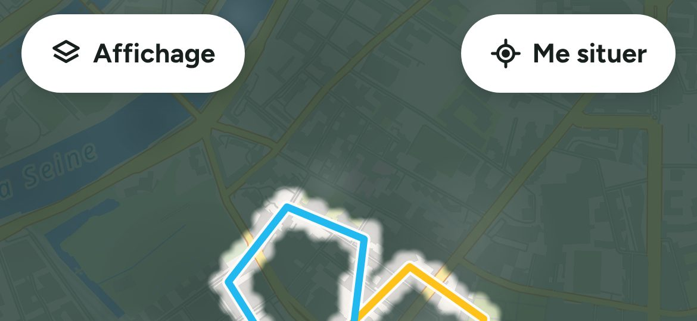
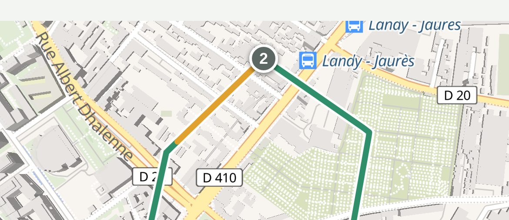
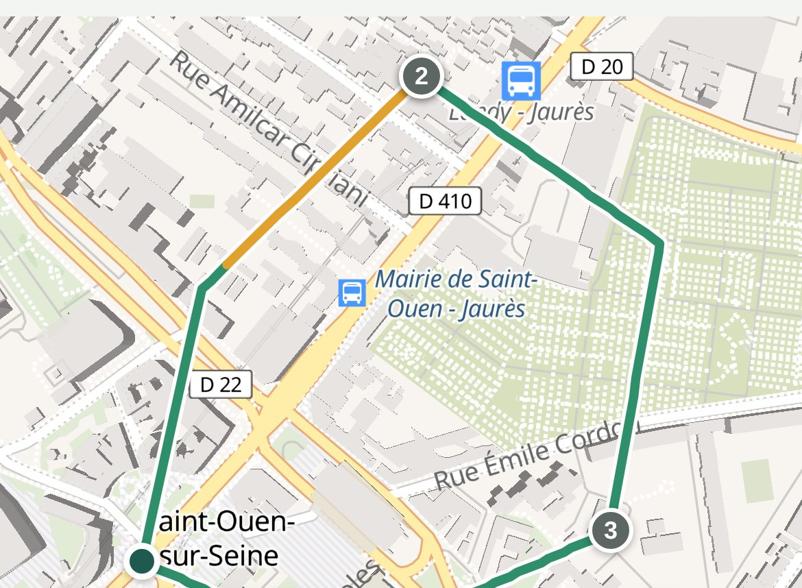
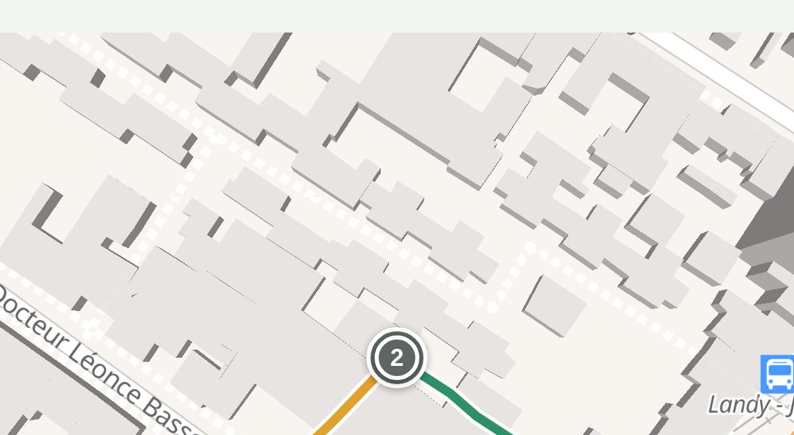

Affichage
Me situer
Le quartier
Les balades de Billy
12
balades
18,4 km
9 h 40
de balade
Toutes
24 h
Cette semaine
Ce mois
Idées de balade
Masquer

Square Ampère
15 min · facile

Les quais
30 min · moyen

Les Docks
45 min · long
Aujourd'hui
2 à raconter
Balade du matin au square Ampère
32 min
2,1 km
4
arrêts
Jeu
Moment de stress
3 nouvelles rues
Il a dormi sur mes pieds
Souvenir · 14 h
Hier
Balade du soir sur les quais
45 min
3,2 km
2
arrêts
Super rappel
Pipi · Grand Parc
Mardi 20 octobre
Balade de midi
15 min
0,9 km
1
arrêt
Partir en balade
Balades
Accueil
Santé